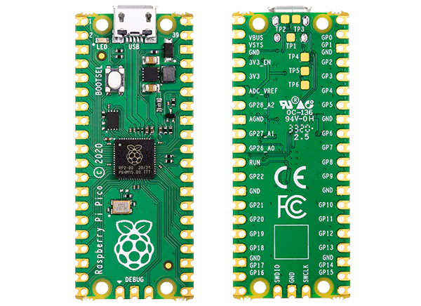
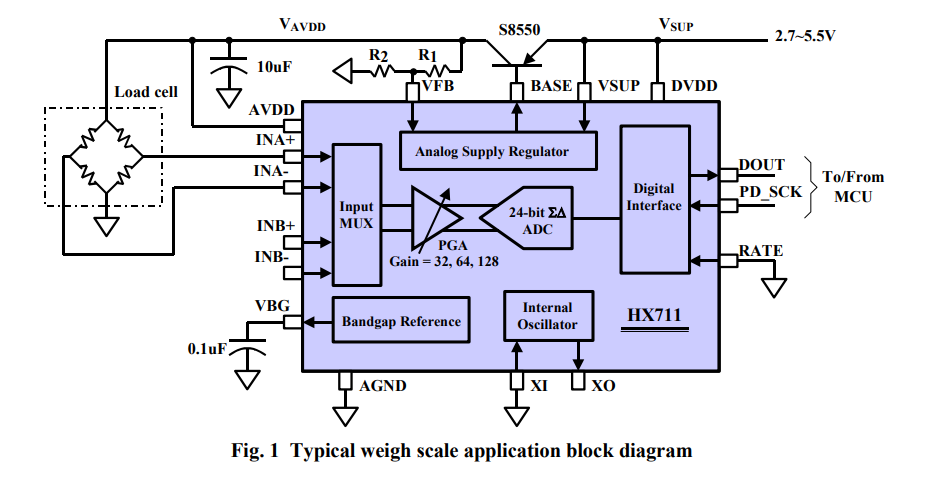
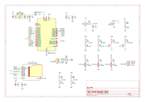
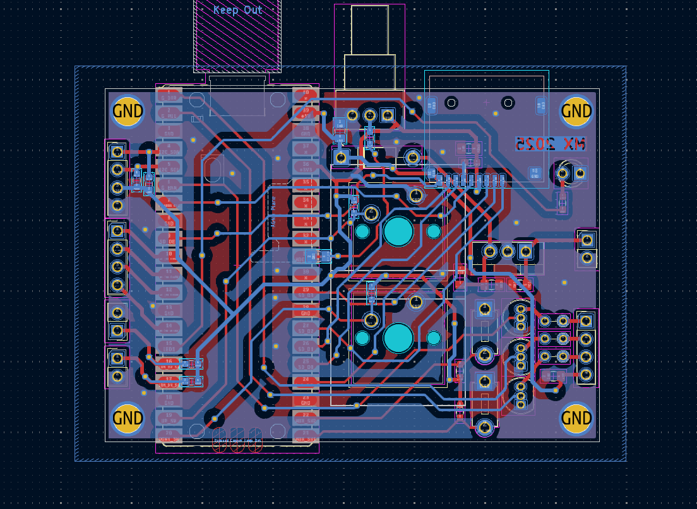
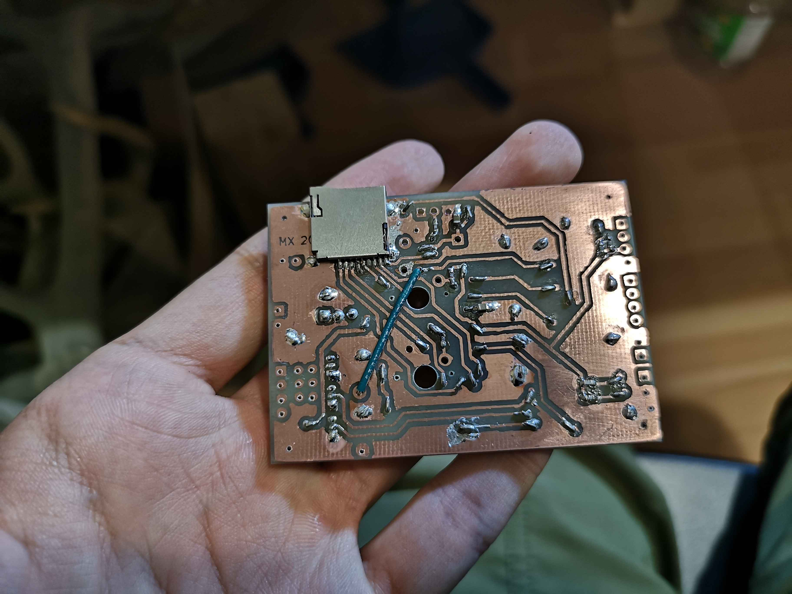
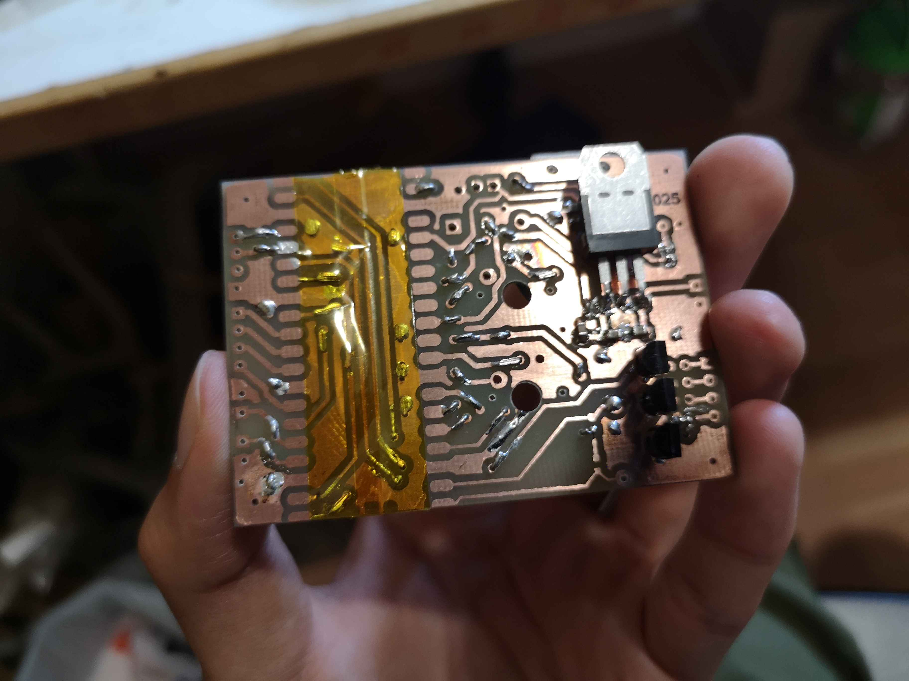
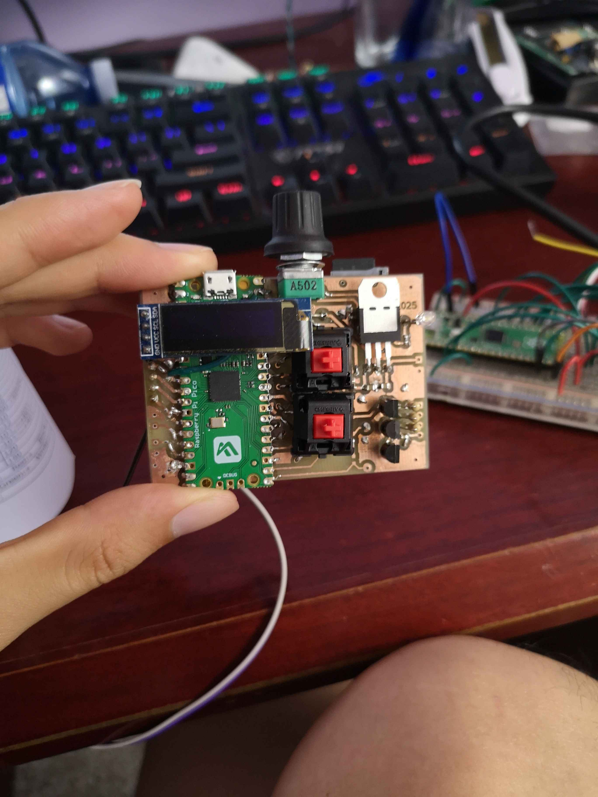

August 26, 2025
A friend of mine wanted to do tests of tensile strength for various 3D printed materials, sort of like the ones on the "CNC Kitchen" YouTube channel . This project is an attempt to make that (or the electrical part, at least) a reality.
We picked out a few parts from online retailers:
As for the controller, the basic functionality should, at the bare minimum:
So first I picked a microcontroller. This isn't exactly a high performance requirement here, so I just chose the RP2040 since I was already familiar with it and we already had a few on hand. It is convenient to use an entire Pico module instead of the bare IC, since it is much easier to solder the module to a DIY fabricated PCB.

In my opinion the castellated edges of the Pico are very useful, since it removes the need to put some kind of pins between the Pico and the carrier PCB. We did end up using a clone, but it was a rather "faithful" clone (as opposed to something like the Feather), and the only thing that changed was that the buck-boost converter was swapped for an LDO.
Firmware-wise, it did get quite a bit more bloated than I had anticipated, but it worked out in the end. The motor driver section consists of a simple speed ramp in discrete time to approximate a constant acceleration. This worked well enough for preventing the motor from skipping steps on starting or stopping. The pulses were generated using the PWM module. My reasoning for this instead of using some other pulse source is that the PWM has an 8+4 bit integer/fractional pre-divider and an additional full 16 bit counter for setting the frequency. This provides a lot more precision than other sources like the PIO clock divider.
This PWM pulse system is then sampled by a PIO program at the same time. This is possible due to the nice design choice by the RP2040's designers to allow the PIO to read all pins regardless of what the pin function is set to. The PIO program simply waits for a rising edge on the pulse pin, and depending on the state of the direction pin, either decrements or increments one of the 32 bit registers in the PIO statemachine.

The HX711 is quite a nice IC, it is dead simple to use in terms of the digital interface although it isn't really a standard like I2C or SPI, and they even provide some basic code in the datasheet. A thing to pay attention to for the HX711 modules though, the load cell is basically a wheatstone bridge, with two voltage dividers that output a differential voltage based on the force. This differential voltage is directly proportional to the input voltage of the bridge though, and this input voltage is provided by an internal regulator in the HX711. The issue is that the voltage regulator's feedback is divided by a rather large ratio before going back into the VFB pin on the HX711, meaning it basically won't regulate anything unless you power the module with 5V, which can be problematic on a 3.3V system. Either way though, although not ideal, even if it doesn't regulate, this can be calibrated out even though its a bit noisy.
There is also an SSD1306 OLED display library that I wrote a few years ago, as well as an open source SD card library and FatFS. This stuff allows the board to display the force on the screen, and also write logs to an SD card. The OLED runs through the I2C bus, while the SD card is running on SDIO.
Anyways, here is the schematic. Apologies for the messy and unlabeled parts, I was in a bit of a hurry to finish the project.

While this isn't a particularly complicated board, I think I should have kept in mind more strongly that this was going to be manufactured by myself, and not a board fab... (you know, you usually probably don't think too hard when you place a via, but when you need to drill press + solder a through wire for each one, it gets a bit painful)

This PCB was designed to fit on a cheap 70x50mm double layered copper clad FR4 sheet, and I planned to toner transfer the PCB. Well, when I went to print the design, my old laser printer decided to throw a fit and not work for a while, so we went to Staples to get the designs printed onto transparent OHP sheet with black laser toner. So it turns out there is something about Staples laser toner that makes it absolutely horrendous for toner transfer, by the looks of things it has a lower melting point, it becomes more liquidy, and also it kind of doesn't transfer well (sticks to the sheet a lot), and overall it was very difficult to get a good transfer. We ended up doing one of the sides with this after many attempts, and even then it was a bit bad but was sufficient. The other side was done when my printer decided to work again.
Unfortunately I forgot to take pictures of the toner transfer, but it was a pretty typical toner transfer: Laser printed sheet → clothes iron onto degreased PCB → peel the sheet off → clean up defects with a sharpie → dunk it in ferric chloride for half an hour
Then we drilled all the via holes with a 0.5mm drill bit and a drill press. My terrible drill set was horribly off-centre, (and also I am not so great at drilling), so some of the holes were a bit off the pads. It still works though. I then soldered all the vias with solid-core hookup wire.
Here is the half-finished PCB.


The pads for the Pico were kapton taped to prevent shorts to the test points underneath.

The finished module has a bit of an odd form factor, but it is sufficient for what it is. I was really in a time crunch here, and this entire project was created in roughly 1.5 weeks including the firmware. I unfortunately don't have any video of it working, but the code is up on GitHub here.
The firmware has a simple UI; simply press the up/down buttons to move the motor in either direction. The potentiometer adjusts the maximum speed of the motor. Holding the two buttons briefly toggles recording/realtime logging to the SD card as a CSV file, and holding the two for longer tares the load cell. The display simply shows the current force on the load cell, as well as whether or not it is recording.
The data log contains the following information:
Overall, I think this project was a success despite being a little rushed. I will hopefully update this if my friend brings the mechanical part of this project to reality. Again, the firmware is here.